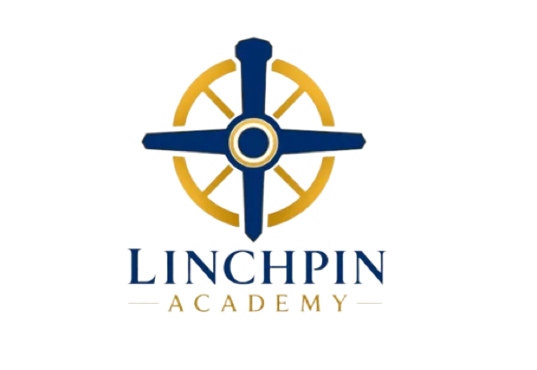

보고서 첫 문장을 못 정해 작년 파일을 다시 엽니다.
500명의 공무원이 먼저 써보고 나누는 곳
또,
작년 파일부터
열었나요?
보고서 첫 문장, 물품 계약, 생성형 AI, 반복 업무.
검색하다 지쳤다면 같은 일을 해본 공무원에게 물어보세요.
결제 없음 · 강의 목록은 가입 전에도 확인 가능
2024사업계획_최종.hwp
2025사업계획_최종_진짜최종.hwp

작년 문서는 참고만.
올해 답은 동료에게.
- 보고서 첫 문장막힘
- AI 업무 적용막힘
- 반복 업무 줄이기막힘
검색 탭 17개보다
동료 한 명이 빠릅니다.
동료 한 명이 빠릅니다.
보고서계약생성형 AI바이브코딩강점·성장
문제와 공감
일을 못해서가 아닙니다.
매번 혼자 알아내야 했기 때문입니다.
도구는 배웠지만 내 업무에 넣는 순간 막힙니다.
똑같은 복사·붙여넣기를 또 손으로 합니다.
정보는 늘었는데 내 상황에 맞는 답은 없습니다.
여기서 방법을 바꿉니다.
혼자 더 오래 찾지 말고,
먼저 해본 동료에게 묻습니다.
검색실습적용
해결
공무원이 설명하면
업무 이야기부터 시작합니다.
기능 소개는 짧게. 실제 화면과 시행착오는 자세하게.
“이 기능이 좋습니다”보다
“나는 이 업무에 이렇게 썼습니다”
교육행정, 보고서, 계약, AI 활용을 직접 겪은 공무원이 가르칩니다.
AI 왕기초 활용법
업무 문장 하나로 AI를 시작합니다.
바빠 보고서 작성법
빈 화면에서 검토 가능한 초안까지 갑니다.
실전 바이브코딩
반복 업무를 작은 도구로 바꿉니다.
대상 좁히기
욕심내지 말고,
지금 막힌 일 하나만 고르세요.
버튼을 누르면 첫 강의를 골라드립니다.
시작
멘토가 없다고 불평하던 공무원이
먼저 그런 사람이 되기로 했습니다.
린치핀아카데미는 거기서 시작했습니다. 현장에서 배운 것을 강의로 만들고, 먼저 배운 사람이 다시 동료에게 건넵니다.
오늘 할 일은 하나면 됩니다.